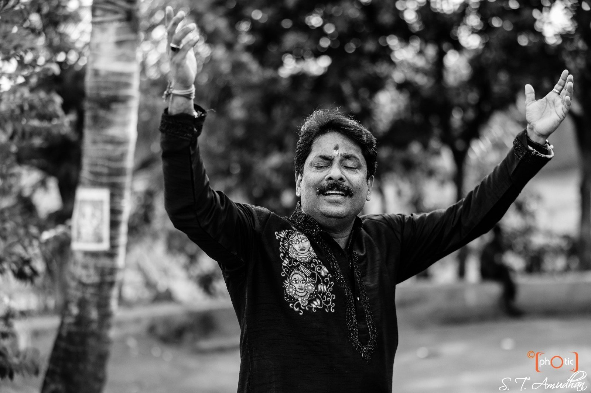
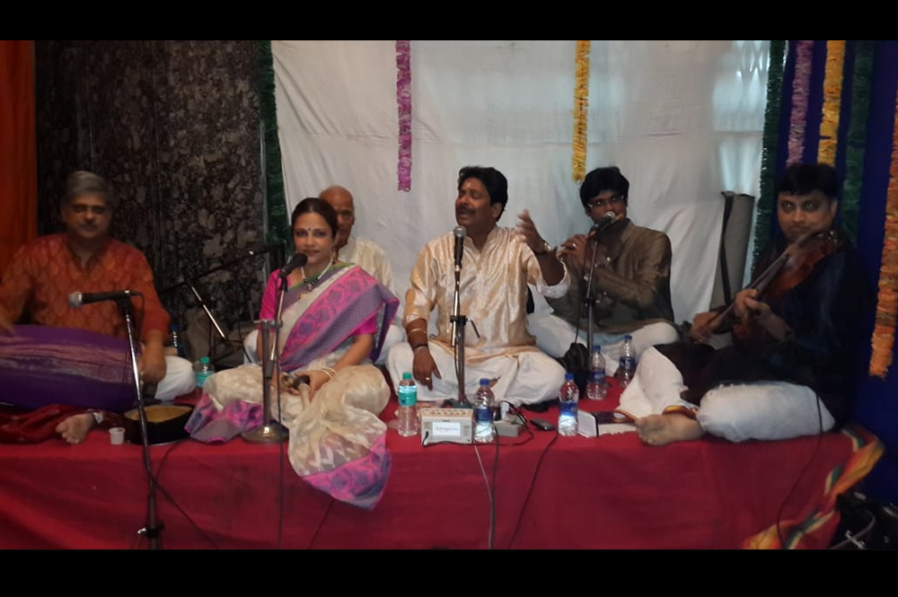
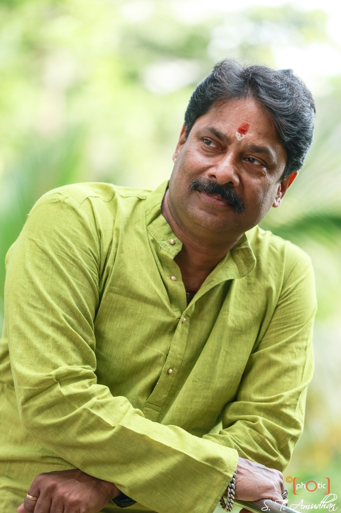

01 · Concert
Carnatic Vocal Concerts
Independent Carnatic recitals rooted in the Guru-Shishya Parampara and the Sopanam style, presented as full solo concerts for festivals, sabhas and private audiences.
Listen to Carnatic vocal →
The range
Carnatic concert, dance, collaboration and composition, each approached with its own musical language.
A repertoire in motion
From a solo Carnatic concert to the vocal spine of a full dance ballet, from a fusion jugalbandi to an original composition set to classical literature.
Four musical paths
Independent Carnatic recitals rooted in the Guru-Shishya Parampara and the Sopanam style, presented as full solo concerts for festivals, sabhas and private audiences.
Listen to Carnatic vocal →
The lead voice for Bharatanatyam, Mohiniattam, Kuchipudi and Kathakali productions, arangetrams and studio recordings, trusted by leading dance schools and gurus.
View dance performances →
Live fusion and jugalbandi work alongside Hindustani vocal and instrumental artists, blending traditions on one stage without diluting either.
Hear collaborations →
Customised Music Therapy sessions for corporates, MNCs and organisations, using classical sound to release stress and restore mental and physical well-being.
Explore workshops →Composer & music director
Beyond performing, he composes and sets music for adaptations from classical literature, for Mohiniattam and Bharatanatyam productions.
Hear his workFrom Kalidasa

Shape the programme
Tell us whether you need a solo concert, dance accompaniment, a fusion set or a commissioned composition, and we will shape it around your programme.